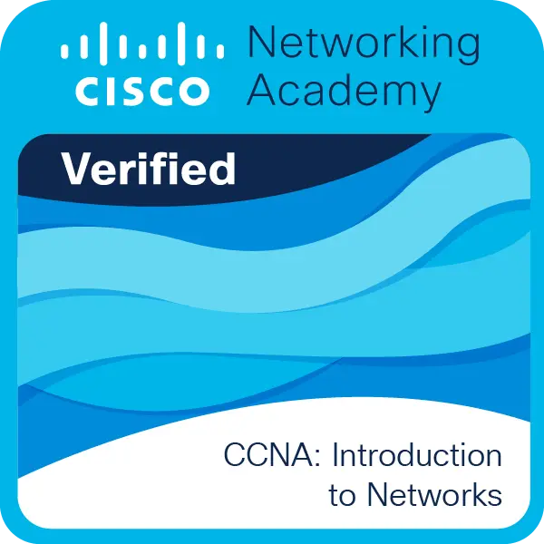
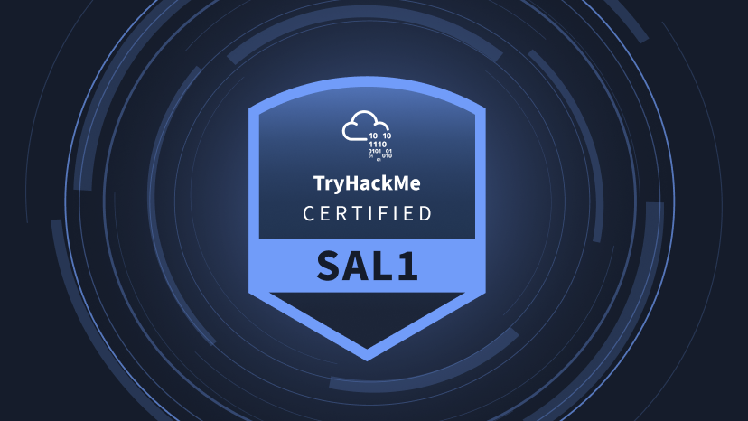
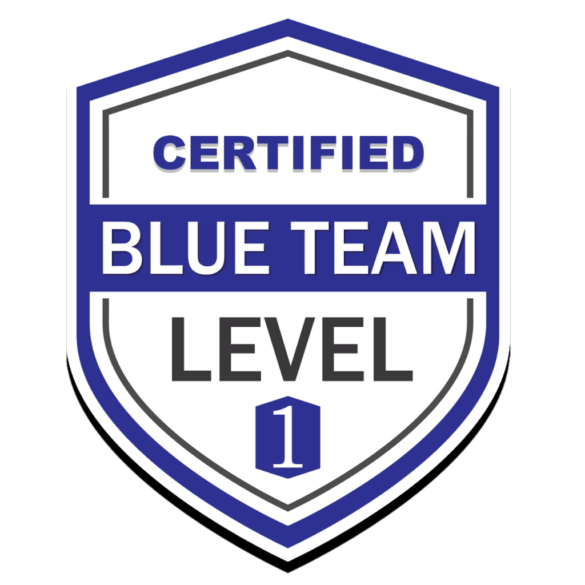

Technical Background
Training in Telecommunications, Computer Systems and Cybersecurity, with practical experience in networking fundamentals, troubleshooting, documentation, anomaly detection and technical incident reporting.
Cybersecurity Portfolio
Junior Cybersecurity Analyst
Defensive security, SOC analysis and technical projects built with evidence, clarity and real-world validation.
About Me
I am a junior cybersecurity professional focused on defensive security, SOC monitoring, Blue Team operations and email security. My background combines Telecommunications and Computer Systems training with a Cybersecurity Master's Degree, giving me a practical foundation in networking, Linux systems, troubleshooting, infrastructure maintenance and secure service configuration.
During my cybersecurity training, I developed PhisDefense SOC & Email Security Lab, a practical project based on a real VPS Ubuntu environment. The project involved deploying and validating a secure mail infrastructure with Postfix, Dovecot, OpenDKIM, OpenDMARC, OpenARC, SPF, DKIM, DMARC p=reject, DNSSEC, MTA-STS, TLS-RPT, STARTTLS and IMAPS TLS.
Before specializing in cybersecurity, I gained technical experience in environments that required anomaly detection, fault diagnosis, structured reporting, technical documentation and attention to detail. These skills are directly transferable to SOC monitoring, alert triage, incident analysis and evidence-based investigation.
Training in Telecommunications, Computer Systems and Cybersecurity, with practical experience in networking fundamentals, troubleshooting, documentation, anomaly detection and technical incident reporting.
Focused on SOC monitoring, Blue Team workflows, log analysis, email security, Linux systems, evidence handling and defensive validation through practical projects.
Seeking junior opportunities in SOC analysis, security monitoring, Blue Team operations, threat detection, incident response fundamentals and defensive cybersecurity operations.
Skills
Grouped skills for SOC, systems, email security and automation roles.
Projects
Independent case studies with different technical focus areas.
Featured project
Defensive email security and SOC monitoring lab based on a real mail security environment. Includes SPF, DKIM, DMARC p=reject, DNSSEC, MTA-STS, TLS-RPT, Postfix, Dovecot, OpenDKIM, OpenDMARC, OpenARC and an interactive Python/Dash dashboard.
Reserved for future cloud and infrastructure security projects.
Reserved for future forensic, monitoring or automation work.
Training
Defensive security, SOC operations, systems security, networking and technical projects.
Foundations in networking, infrastructure, TCP/IP, troubleshooting and systems.
Certifications
A visual overview of completed, in-progress and planned certifications related to networking, SOC analysis, Blue Team operations and defensive cybersecurity.

Cisco Networking Academy certification focused on networking fundamentals, TCP/IP, routing, switching, addressing and basic network troubleshooting.

TryHackMe learning path focused on SOC fundamentals, alert triage, log analysis, security monitoring and practical Blue Team workflows.

Planned certification focused on practical Blue Team skills, defensive analysis, incident handling, security operations and investigation methodology.
Contact
Available for opportunities in Spain and remote positions.